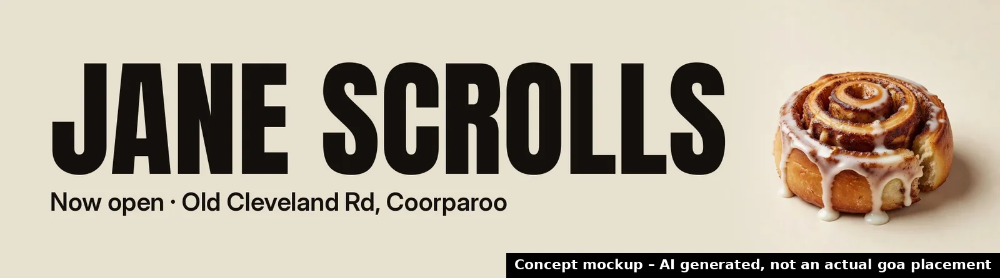

Jane Scrolls
Why now: Cinnamon-scroll brand opened its own cafe and production kitchen at 299 Old Cleveland Road, Coorparoo.
🗓 Opened Oct 2026; 'grand opening, take two' · Source: Brisbane Times Good Food, 14 Oct 2026 ↗

Where your audience drives
Business location approximate (from the published address/suburb). goa site coordinates from goa's public site locator. © OpenStreetMap contributors.
Priority score 92/100
Why 92? Score breakdown
| Trigger certainty | 25/25 | Confirmed (opened / approved) | |
| goa site proximity | 25/25 | nearest 0.3 km; 11 goa sites within 2 km | |
| Category fit for OOH | 14/20 | Small food retail launch, smaller budgets | |
| Timing window | 15/15 | key date Oct 2026 (month only) (~6 days ago) | |
| Source strength | 13/15 | Established news publisher |
Heuristic priority score from the factors above, not a prediction of sales outcomes.
Campaign builder
Pick sites and flight length to shape a brief. Pricing isn't shown: indicative pricing confirmed by goa.
Indicative pricing confirmed by goa. Availability subject to booking.
Campaign timeline
- NowRep reviews trigger and approves the draft pitch
- Oct 2026Trigger: Opened Oct 2026; 'grand opening, take two'
- 28 OctSuggested flight start: launch awareness while the opening is fresh
- 25 NovMid-flight check-in: refresh creative / dayparting on digital
- 12 DecQLD summer school holidays begin (to 26 Jan 2027): optional seasonal burst
Concept creative

Concept mockup – AI generated, not an actual goa placement. No real logos used; final creative from the client.
Idea
Create mouth-watering visuals of warm cinnamon scrolls and cafe treats with a clear call to visit the new Coorparoo location. Use the headline Grand Opening Take Two to build excitement and urgency around the October launch.
Objective
Drive awareness and foot traffic to the new Cinnamon-scroll cafe and bakery in its opening weeks.
Audience
Local residents, commuters and food lovers in Brisbane Inner South looking for fresh bakery and cafe options.
Draft pitch email
Subject: Cinnamon-scroll Cafe Opening in Coorparoo Hi there, I saw the Brisbane Times Good Food article about Cinnamon-scrolls grand opening take two at your new cafe and production kitchen at 299 Old Cleveland Road, Coorparoo. Congratulations on the October 2026 launch. To help drive foot traffic from day one our Iconic sites at 220 Old Cleveland Road are only 0.3 km away and perfectly positioned to reach locals and passing drivers. The 6x3m site at Stanley Street East corner Tiber Street is also close at 1.2 km. Would you have time for a quick 15-minute chat about how we can support your opening? Thanks, [Rep name], goa Reply STOP to opt out.
AI draft. Requires rep review and approval; sent only from the rep's Outlook, with opt-out (Spam Act 2003).
Next step
Book a 15-minute chat with the goa team to confirm availability and indicative pricing for your selected sites.
Talk to goa →